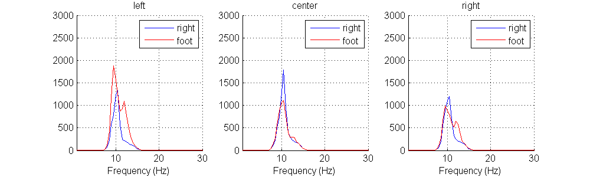
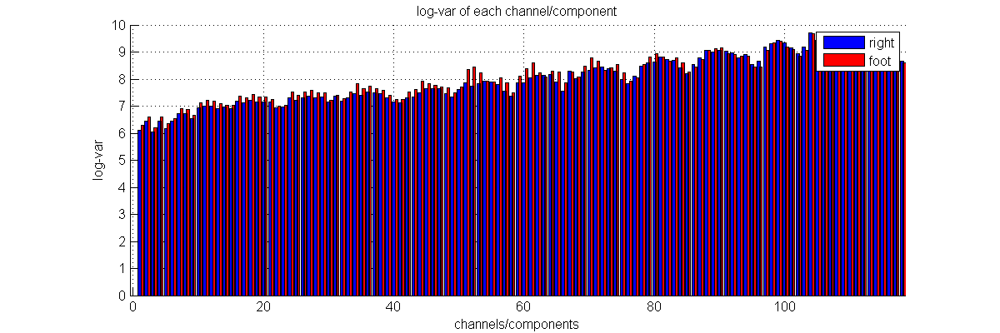
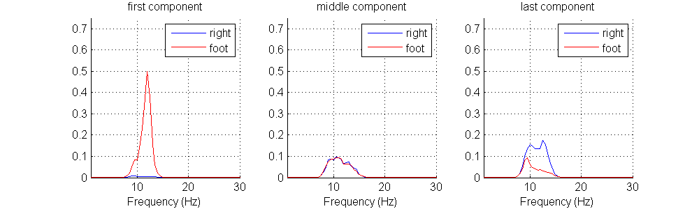
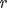
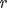
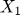
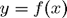
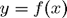

Contents
function tutorial3()
3. Imagined movement
In this tutorial we will look at imagined movement. Our movement is controlled in the motor cortex where there is an increased level of mu activity (8–12 Hz) when we perform movements. This is accompanied by a reduction of this mu activity in specific regions that deal with the limb that is currently moving. This decrease is called Event Related Desynchronization (ERD). By measuring the amount of mu activity at different locations on the motor cortex, we can determine which limb the subject is moving. Through mirror neurons, this effect also occurs when the subject is not actually moving his limbs, but merely imagining it.
Credits
The CSP code was originally written by Boris Reuderink of the Donders Institute for Brain, Cognition and Behavior. It is part of his Python EEG toolbox: https://github.com/breuderink/eegtools
Inspiration for this tutorial also came from the excellent code example given in the book chapter:
Arnaud Delorme, Christian Kothe, Andrey Vankov, Nima Bigdely-Shamlo, Robert Oostenveld, Thorsten Zander, and Scott Makeig. MATLAB-Based Tools for BCI Research, In (B+H)CI: The Human in Brain-Computer Interfaces and the Brain in Human-Computer Interaction. Desney S. Tan and Anton Nijholt (eds.), 2009, 241-259, http://dx.doi.org/10.1007/978-1-84996-272-8
Obtaining the data
The dataset for this tutorial is provided by the fourth BCI competition, which you will have to download youself. First, go to http://www.bbci.de/competition/iv/#download and fill in your name and email address. An email will be sent to you automatically containing a username and password for the download area.
Download Data Set 1, from Berlin, the 100Hz version in MATLAB format: http://bbci.de/competition/download/competition_iv/BCICIV_1_mat.zip and unzip it in a subdirectory called 'data_set_IV'. This subdirectory should be inside the directory in which you've stored the tutorial files.
Also download the true labels of this dataset: http://bbci.de/competition/iii/results/berlin_IVa/true_labels_al.mat and store them in the same 'data_set_IV' subdirectory you created earlier.
If you've followed the instructions above, the following code should load the data:
m = load('data_set_IV/100Hz/data_set_IVa_al.mat'); m2 = load('data_set_IV/true_labels_al.mat'); sample_rate = m.nfo.fs; EEG = m.cnt'; nchannels = size(EEG, 1); nsamples = size(EEG, 2); channel_names = m.nfo.clab; event_onsets = m.mrk.pos; event_codes = m2.true_y; cl_lab = m.mrk.className; nclasses = length(cl_lab); nevents = length(event_onsets);
Now we have the data in the following variables:
% Print some information disp('Shape of EEG:'); disp(size(EEG)); disp('Sample rate:'); disp(sample_rate); disp('Number of channels:'); disp(nchannels); disp('Channel names:'); disp(channel_names); disp('Number of events:'); disp(length(event_onsets)); disp('Event codes:'); disp(unique(event_codes)); disp('Class labels:'); disp(cl_lab); disp('Number of classes:'); disp(nclasses);
Shape of EEG:
118 283574
Sample rate:
100
Number of channels:
118
Channel names:
Columns 1 through 8
'Fp1' 'AFp1' 'Fpz' 'AFp2' 'Fp2' 'AF7' 'AF3' 'AF4'
Columns 9 through 16
'AF8' 'FAF5' 'FAF1' 'FAF2' 'FAF6' 'F7' 'F5' 'F3'
Columns 17 through 25
'F1' 'Fz' 'F2' 'F4' 'F6' 'F8' 'FFC7' 'FFC5' 'FFC3'
Columns 26 through 33
'FFC1' 'FFC2' 'FFC4' 'FFC6' 'FFC8' 'FT9' 'FT7' 'FC5'
Columns 34 through 41
'FC3' 'FC1' 'FCz' 'FC2' 'FC4' 'FC6' 'FT8' 'FT10'
Columns 42 through 48
'CFC7' 'CFC5' 'CFC3' 'CFC1' 'CFC2' 'CFC4' 'CFC6'
Columns 49 through 57
'CFC8' 'T7' 'C5' 'C3' 'C1' 'Cz' 'C2' 'C4' 'C6'
Columns 58 through 65
'T8' 'CCP7' 'CCP5' 'CCP3' 'CCP1' 'CCP2' 'CCP4' 'CCP6'
Columns 66 through 73
'CCP8' 'TP9' 'TP7' 'CP5' 'CP3' 'CP1' 'CPz' 'CP2'
Columns 74 through 81
'CP4' 'CP6' 'TP8' 'TP10' 'PCP7' 'PCP5' 'PCP3' 'PCP1'
Columns 82 through 89
'PCP2' 'PCP4' 'PCP6' 'PCP8' 'P9' 'P7' 'P5' 'P3'
Columns 90 through 98
'P1' 'Pz' 'P2' 'P4' 'P6' 'P8' 'P10' 'PPO7' 'PPO5'
Columns 99 through 106
'PPO1' 'PPO2' 'PPO6' 'PPO8' 'PO7' 'PO3' 'PO1' 'POz'
Columns 107 through 114
'PO2' 'PO4' 'PO8' 'OPO1' 'OPO2' 'O1' 'Oz' 'O2'
Columns 115 through 118
'OI1' 'OI2' 'I1' 'I2'
Number of events:
280
Event codes:
1 2
Class labels:
'right' 'foot'
Number of classes:
2
This is a large recording: 118 electrodes where used, spread across the entire scalp. The subject was given a cue and then imagined either right hand movement or the movement of his feet. As can be seen from the Homunculus, foot movement is controlled at the center of the motor cortex (which makes it hard to distinguish left from right foot), while hand movement is controlled more lateral.
The code below cuts trials for the two classes and should look familiar if you've completed the previous tutorials. Trials are cut in the interval [0.5–2.5 s] after the onset of the cue.
% Struct to store the trials in, each class gets an entry trials = struct(); % The time window (in samples) to extract for each trial, here 0.5 -- 2.5 % seconds win = fix(0.5*sample_rate):fix(2.5*sample_rate)-1; % Length of the time window nsamples = length(win); % Loop over the classes (right, foot) codes = unique(event_codes); for i = 1:length(cl_lab) cl = cl_lab{i}; code = codes(i); % Extract the onsets for the class cl_onsets = event_onsets(event_codes == code); % Allocate memory for the trials trials.(cl) = zeros(nchannels, nsamples, length(cl_onsets)); % Extract each trial for j = 1:length(cl_onsets) onset = cl_onsets(j); trials.(cl)(:,:,j) = EEG(:, win+onset); end end % Some information about the dimensionality of the data (channels x time x trials) disp('Shape of trials.right:'); disp(size(trials.right)); disp('Shape of trials.foot:'); disp(size(trials.foot));
Shape of trials.right: 118 200 140 Shape of trials.foot: 118 200 140
Plotting the data
Since the feature we're looking for (a decrease in mu activity) is a frequency feature, lets plot the PSD of the trials in a similar manner as with the SSVEP data. The code below defines a function that computes the PSD for each trial (we're going to need it again later on):
function [trials_PSD, freqs] = calc_psd(trials) % Calculates for each trial the Power Spectral Density (PSD). % arguments: % trials - An array (channels x samples x trials) containing the signal. % returns: % An array (channels x PSD x trials) containing the PSD for each trial. % A list containing the frequencies for which the PSD was computed (useful for plotting later) ntrials = size(trials, 3); trials_PSD = zeros(nchannels, 101, ntrials); % Iterate over trials and channels for trial = 1:ntrials for ch = 1:nchannels % Calculate the PSD [PSD, freqs] = pwelch(squeeze(trials(ch,:,trial)), nsamples, 0, nsamples, sample_rate); trials_PSD(ch, :, trial) = PSD; end end end
% Apply the function [psd_r, freqs] = calc_psd(trials.right); [psd_f, freqs] = calc_psd(trials.foot); trials_PSD = struct('right', psd_r, 'foot', psd_f);
The function below plots the PSDs that are calculated with the above function. Since plotting it for 118 channels will clutter the display, it takes the indices of the desired channels as input, as well as some metadata to decorate the plot.
function plot_psds(trials_PSD, freqs, chan_ind, chan_lab, maxy) % Plots PSD data calculated with psd(). % arguments: % trials - The PSD data, as returned by psd() % freqs - The frequencies for which the PSD is defined, as returned by psd() % chan_ind - List of indices of the channels to plot % chan_lab - (optional) List of names for each channel % maxy - (optional) Limit the y-axis to this value figure('Position', [100, 100, 1000, 300]); nchans = length(chan_ind); % Maximum of 3 plots per row nrows = ceil(nchans / 3); ncols = min(3, nchans); % Enumerate over the channels for i = 1:length(chan_ind) ch = chan_ind(i); % Figure out which subplot to draw to subplot(nrows,ncols,i); % Plot the PSD for each class hold on; colors = {'b', 'r'}; for j = 1:nclasses cl = cl_lab{j}; plot(freqs, squeeze(mean(trials_PSD.(cl)(ch,:,:), 3)), colors{j}); end hold off; % All plot decoration below... xlim([1, 30]); ylim([0, maxy]); grid() xlabel('Frequency (Hz)') title(chan_lab{i}); legend(cl_lab); end end
Lets put the `plot_psds()` function to use and plot three channels:
- C3: Central, left
- Cz: Central, central
- C4: Central, right
channels_of_interest = [find(strcmp(channel_names, 'C3')), ... find(strcmp(channel_names, 'Cz')), ... find(strcmp(channel_names, 'C4'))]; plot_psds(trials_PSD, freqs, channels_of_interest, ... {'left', 'center', 'right'}, 2500);

A spike of mu activity can be seen on each channel for both classes. At the left hemisphere, the mu for the right hand movement is lower than for the foot movement due to the ERD. At the central electrode, the mu for the foot movement is reduced and at the right electrode the mu activity is about equal for both classes. This is in line with the theory that the right hand is controlled by the left hemiphere and the feet are controlled centrally.
Classifying the data
We will use a machine learning algorithm to construct a model that can distinguish between the right hand and foot movement of this subject. In order to do this we need to:
- find a way to quantify the amount of mu activity present in a trial
- make a model that describes expected values of mu activity for each class
- finally test this model on some unseen data to see if it can predict the correct class label
We will follow a classic BCI design by Blankertz et al. [1] where they use the logarithm of the variance of the signal in a certain frequency band as a feature for the classifier.
[1] Blankertz, B., Dornhege, G., Krauledat, M., Müller, K.-R., & Curio, G. (2007). The non-invasive Berlin Brain-Computer Interface: fast acquisition of effective performance in untrained subjects. NeuroImage, 37(2), 539–550. doi:10.1016/j.neuroimage.2007.01.051
The script below designs a band pass filter using the butter function that will strip away frequencies outside the 8--15Hz window. The filter is applied to all trials:
function trials_filt = bandpass(trials, lo, hi, sample_rate) % Designs and applies a bandpass filter to the signal. % arguments: % trials - An array (channels x samples x trials) containing the signal % lo - Lower frequency bound (in Hz) % hi - Upper frequency bound (in Hz) % sample_rate - Sample rate of the signal (in Hz) % returns: % An array (channels x samples x trials) containing the bandpassed % signal ntrials = size(trials, 3); % The butter() function takes the filter order: higher numbers mean a % sharper frequency cutoff, but the resulting signal might be shifted % in time, lower numbers mean a soft frequency cutoff, but the % resulting signal less distorted in time. It also takes the lower and % upper frequency bounds to pass, divided by the niquist frequency, % which is the sample rate divided by 2: [a, b] = butter(3, [lo/(sample_rate/2.0), hi/(sample_rate/2.0)]); % Applying the filter to each trial. % filtfilt operates across the first non-singleton dimension, so we % permute the trials array so that the samples are on the first % dimension trials = permute(trials, [2, 1, 3]); trials_filt = zeros(size(trials)); for i = 1:ntrials trials_filt(:,:,i) = filtfilt(a, b, trials(:,:,i)); end % Undo the permutation performed earlier trials_filt = permute(trials_filt, [2, 1, 3]); end
Apply the function:
trials_filt = struct('right', bandpass(trials.right, 8, 15, sample_rate), ... 'foot', bandpass(trials.foot, 8, 15, sample_rate));
Plotting the PSD of the resulting trials_filt shows the suppression of frequencies outside the passband of the filter:
[psd_r, freqs] = calc_psd(trials_filt.right); [psd_f, freqs] = calc_psd(trials_filt.foot); trials_PSD = struct('right', psd_r, 'foot', psd_f); plot_psds(trials_PSD, freqs, channels_of_interest, ... {'left', 'center', 'right'}, 3000);
As a feature for the classifier, we will use the logarithm of the variance of each channel. The function below calculates this:
function x = logvar(trials) % Calculate the log-var of each channel. % arguments: % trials - An array (channels x samples x trials) containing the signals. % returns: % An array (channels x trials) containing for each channel the logvar of the signal % var operates along the first non singleton dimension, permute the % array to align the samples along the first dimension trials = permute(trials, [2, 1, 3]); % Calculate the log-var x = log(squeeze(var(trials))); end
Apply the function
trials_logvar = struct('right', logvar(trials_filt.right), ... 'foot', logvar(trials_filt.foot));
Below is a function to visualize the logvar of each channel as a bar chart:
function plot_logvar(trials) % Plots the log-var of each channel/component. % arguments: % trials - Dictionary containing the trials (log-vars x trials) for 2 classes. figure('Position', [100, 100, 1200, 400]); x0 = (1:nchannels); x1 = (1:nchannels) + 0.4; y0 = mean(trials.right, 2); y1 = mean(trials.foot, 2); hold on; bar(x0, y0, 0.5, 'b'); bar(x1, y1, 0.4, 'r'); hold off; xlim([-0.5, nchannels+0.5]); grid(); title('log-var of each channel/component'); xlabel('channels/components'); ylabel('log-var'); legend({'right', 'foot'}); end
Plot the log-vars
plot_logvar(trials_logvar);
We see that most channels show a small difference in the log-var of the signal between the two classes. The next step is to go from 118 channels to only a few channel mixtures. The CSP algorithm calculates mixtures of channels that are designed to maximize the difference in variation between two classes. These mixures are called spatial filters.
function W = csp(trials_r, trials_f) % Calculate the CSP transformation matrix W. % arguments: % trials_r - Array (channels x samples x trials) containing right hand movement trials % trials_f - Array (channels x samples x trials) containing foot movement trials % returns: % Mixing matrix W cov_r = trial_cov(trials_r); cov_f = trial_cov(trials_f); P = whitening(cov_r + cov_f); [B,~,~] = svd(P' * cov_f * P); W = P * B; end function X = trial_cov(trials) % Calculate the covariance for each trial and return their average [nchannels, nsamples, ntrials] = size(trials); covs = zeros(nchannels, nchannels, ntrials); for i = 1:ntrials covs(:,:,i) = (squeeze(trials(:,:,i)) * squeeze(trials(:,:,i))') / nsamples; end X = mean(covs, 3); end function X = whitening(sigma) % Calculate a whitening matrix for covariance matrix sigma. [U, l, ~] = svd(sigma); X = U * (l ^ -0.5); end function trials_csp = apply_mix(W, trials) % Apply a mixing matrix to each trial (basically multiply W with the % EEG signal matrix) ntrials = size(trials, 3); trials_csp = zeros(size(trials)); for i = 1:ntrials trials_csp(:,:,i) = W' * squeeze(trials(:,:,i)); end end
% Apply the functions W = csp(trials_filt.right, trials_filt.foot); trials_csp = struct('right', apply_mix(W, trials_filt.right), ... 'foot', apply_mix(W, trials_filt.foot));
To see the result of the CSP algorithm, we plot the log-var like we did before:
trials_logvar = struct('right', logvar(trials_csp.right), ... 'foot', logvar(trials_csp.foot)); plot_logvar(trials_logvar);

Instead of 118 channels, we now have 118 mixtures of channels, called components. They are the result of 118 spatial filters applied to the data.
The first filters maximize the variation of the first class, while minimizing the variation of the second. The last filters maximize the variation of the second class, while minimizing the variation of the first.
This is also visible in a PSD plot. The code below plots the PSD for the first and last components as well as one in the middle:
[psd_r, freqs] = calc_psd(trials_csp.right); [psd_f, freqs] = calc_psd(trials_csp.foot); trials_PSD = struct('right', psd_r, 'foot', psd_f); plot_psds(trials_PSD, freqs, [1, 59, 118], ... {'first component', 'middle component', 'last component'}, 0.75);
In order to see how well we can differentiate between the two classes, a scatter plot is a useful tool. Here both classes are plotted on a 2-dimensional plane: the x-axis is the first CSP component, the y-axis is the last.
function plot_scatter(right, foot) figure(); hold on; scatter(right(1,:), right(end,:), 'b'); scatter(foot(1,:), foot(end,:), 'r'); hold off; xlabel('Last component'); ylabel('First component'); title('Right hand versus foot movement'); legend({'right', 'foot'}); end
plot_scatter(trials_logvar.right, trials_logvar.foot)

We will apply a linear classifier to this data. A linear classifier can be thought of as drawing a line in the above plot to separate the two classes. To determine the class for a new trial, we just check on which side of the line the trial would be if plotted as above.
The data is split into a train and a test set. The classifier will fit a model (in this case, a straight line) on the training set and use this model to make predictions about the test set (see on which side of the line each trial in the test set falls). Note that the CSP algorithm is part of the model, so for fairness sake it should be calculated using only the training data.
%Percentage of trials to use for training (50-50 split here) train_percentage = 0.5; % Calculate the number of trials for each class the above percentage boils % down to ntrain_r = fix(size(trials_filt.right, 3) * train_percentage); ntrain_f = fix(size(trials_filt.foot, 3) * train_percentage); ntest_r = size(trials_filt.right, 3) - ntrain_r; ntest_f = size(trials_filt.foot, 3) - ntrain_f; % Splitting the frequency filtered signal into a train and test set train = struct('right', trials_filt.right(:,:,1:ntrain_r), ... 'foot', trials_filt.foot(:,:,1:ntrain_f)); test = struct('right', trials_filt.right(:,:,ntrain_r+1:end), ... 'foot', trials_filt.foot(:,:,ntrain_f+1:end)); % Train the CSP on the training set only W = csp(train.right, train.foot); % Apply the CSP on both the training and test set train.right = apply_mix(W, train.right); train.foot = apply_mix(W, train.foot); test.right = apply_mix(W, test.right); test.foot = apply_mix(W, test.foot); % Select only the first and last components for classification comp = [1,118]; train.right = train.right(comp,:,:); train.foot = train.foot(comp,:,:); test.right = test.right(comp,:,:); test.foot = test.foot(comp,:,:); % Calculate the log-var feature train.right = logvar(train.right); train.foot = logvar(train.foot); test.right = logvar(test.right); test.foot = logvar(test.foot);
For a classifier the Linear Discriminant Analysis (LDA) algorithm will be used. It fits a gaussian distribution to each class, characterized by the mean and covariance, and determines an optimal separating plane to divide the two. This plane is defined as  , where  is the classifier output,
, where  is the classifier output,  are called the feature weights,
are called the feature weights,  are the features of the trial,
are the features of the trial,  is the dimensionality of the data and
is the dimensionality of the data and  is called the offset.
is called the offset.
In our case we have 2 dimensional data, so the separating plane will be a line:  . To determine a class label for an unseen trial, we can calculate whether the result is positive or negative.
. To determine a class label for an unseen trial, we can calculate whether the result is positive or negative.
function [W, b] = train_lda(class1, class2) % Trains the LDA algorithm. % arguments: % class1 - An array (features x trials) for class 1 % class2 - An array (features x trails) for class 2) % returns: % The projection matrix W % The offset b m1 = mean(class1'); m2 = mean(class2'); W = (m2 - m1) / (cov(class1') + cov(class2')); b = (m1 + m2) * W' / 2; end function prediction = apply_lda(test, W, b) % Applies a previously trained LDA to new data. % arguments: % test - An array (features x trials) containing the data % W - The project matrix W as calculated by train_lda() % b - The offsets b as calculated by train_lda() % returns: % A list containing a classlabel for each trial ntrials = size(test, 2); prediction = []; for i = 1:ntrials % The line below is a generalization for: % result = W(0) * test(0,i) + W(1) * test(1,i) - b result = W * test(:,i) - b; if result <= 0 prediction = [prediction 1]; else prediction = [prediction 2]; end end end
Training the LDA using the training data gives us and :
[W, b] = train_lda(train.right, train.foot); disp('W:'); disp(W); disp('b:'); disp(b);
W:
5.6921 -4.0950
b:
-6.8300
It can be informative to recreate the scatter plot and overlay the decision boundary as determined by the LDA classifier. The decision boundary is the line for which the classifier output is exactly 0. The scatterplot used  as  -axis and
-axis and  as
as  -axis. To find the function  describing the decision boundary, we set to 0 and solve for in the equation of the separating plane:
-axis. To find the function  describing the decision boundary, we set to 0 and solve for in the equation of the separating plane:
$$\begin{align} W_1 \cdot x + W_2 \cdot y - b &= 0 \\ W_1 \cdot x + W_2 \cdot y &= b \\ W_2 \cdot y &= b - W_1 \cdot x \\ \\ y &= \frac{b - W_1 \cdot x}{W_2} \end{align}$$
Unable to interpret LaTeX string "$$\begin{align} W_1 \cdot x + W_2 \cdot y - b &= 0 \\ W_1 \cdot x + W_2 \cdot y &= b \\ W_2 \cdot y &= b - W_1 \cdot x \\ \\ y &= \frac{b - W_1 \cdot x}{W_2} \end{align}$$"We first plot the decision boundary with the training data used to calculate it:
% Scatterplot like before plot_scatter(train.right, train.foot); title('Training data'); % Calculate decision boundary (x,y) x = (-5:0.1:1); y = (b - W(1)*x) / W(2); % Plot the decision boundary hold on; plot(x, y, '--k', 'LineWidth', 2); hold off; xlim([-5, 1]); ylim([-2.2, 1]);

The code below plots the boundary with the test data on which we will apply the classifier. You will see the classifier is going to make some mistakes.
plot_scatter(test.right, test.foot); title('Test data'); hold on; plot(x, y, '--k', 'LineWidth', 2); hold off; xlim([-5, 1]); ylim([-2.2, 1]);

Now the LDA is constructed and fitted to the training data. We can now apply it to the test data. The results are presented as a confusion matrix:
| True labels → | ||
| ↓ Predicted labels | Right | Foot |
| Right | ||
| Foot | ||
% The number at the diagonal will be trials that were correctly classified, % any trials incorrectly classified (either a false positive or false % negative) will be in the corners. % Print confusion matrix conf = [sum(apply_lda(test.right, W, b) == 1), sum(apply_lda(test.foot, W, b) == 1); ... sum(apply_lda(test.right, W, b) == 2), sum(apply_lda(test.foot, W, b) == 2)]; disp('Confusion matrix:'); disp(conf); fprintf('\nAccuracy: %.3f\n', sum(diag(conf)) / sum(sum(conf)));
Confusion matrix:
70 5
0 65
Accuracy: 0.964
The confusion matrix shows that 5 out of the 70 trials with foot movement were incorrectly classified as right hand movement. All the trials with right hand movement were classified correctly. In total, 96% of the trials were correctly classified, not a bad score!
end